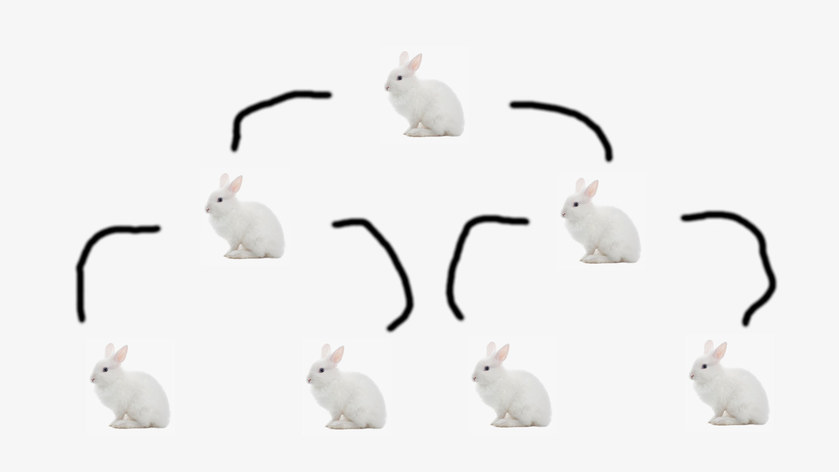

In computing, a fork bomb (also called rabbit virus or wabbit[1]) is a denial-of-service (DoS) attack wherein a process continually replicates itself to deplete available system resources, slowing down or crashing the system due to resource starvation.
Around 1978, an early variant of a fork bomb called wabbit was reported to run on a System/360. It may have descended from a similar attack called RABBITS reported from 1969 on a Burroughs 5500 at the University of Washington.[1]
Fork bombs operate both by consuming CPU time in the process of forking, and by saturating the operating system's process table.[2][3] A basic implementation of a fork bomb is an infinite loop that repeatedly launches new copies of itself.
In Unix-like operating systems, fork bombs are generally written to use the fork system call.[3] As forked processes are also copies of the first program, once they resume execution from the next address at the frame pointer, they continue forking endlessly within their own copy of the same infinite loop; this has the effect of causing an exponential growth in processes. As modern Unix systems generally use a copy-on-write resource management technique when forking new processes,[4] a fork bomb generally will not saturate such a system's memory.
Microsoft Windows operating systems do not have an equivalent functionality to the Unix fork system call;[5] a fork bomb on such an operating system must therefore create a new process instead of forking from an existing one.
A classic example of a fork bomb is one written in Unix shell :(){ :|:& };:, possibly dating back to 1999,[6] which can be more easily understood as
fork() {
fork | fork &
}
fork
In it, a function is defined (fork()) as calling itself (fork), then piping (|) its result into itself, all in a background job (&).
The code using a colon : as the function name is not valid in a shell as defined by POSIX, which only permits alphanumeric characters and underscores in function names.[7] However, its usage is allowed in GNU Bash as an extension.[8]
As a fork bomb's mode of operation is entirely encapsulated by creating new processes, one way of preventing a fork bomb from severely affecting the entire system is to limit the maximum number of processes that a single user may own. On Linux, this can be achieved by using the ulimit utility; for example, the command ulimit -u 30 would limit the affected user to a maximum of thirty owned processes.[9] On PAM-enabled systems, this limit can also be set in /etc/security/limits.conf,[10] and on *BSD, the system administrator can put limits in /etc/login.conf.[11] Modern Linux systems also allow finer-grained fork bomb prevention through cgroups and process number (PID) controllers.[12]